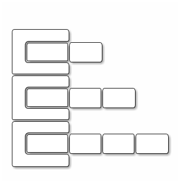

Décembre 2020
On considère les valeurs selon leur type.
longintshortbytefloat 0.5fdouble 0.5Attention aux erreurs de représentations !
booleantrue ou falsechar
'a' , '\n'
String
"ceci est une chaîne"
"2"
type nomDeVariable ;
par exemple int requiredNumberOfChars ;
ou
type nomDeVariable= valeurInitiale ;
par exemple int currentNumberOfChars= 0;
nomDeVariable= expression ;
Ce n'est pas une relation (d'égalité).
+ - * / % << >>
par exemple & | ^ ~
(bitwise en anglais et Tilde en français)
&& || ^ ! Les opérateurs && et
|| court-circuitent : l'ordre peut être important.
par exemple pour (i !=0) && (10/i < 3)
variable op= expression;
est un raccourci (syntactic sugar) pour
variable = variable op expression;
par exemple currentNumberOfChars += 2;
est équivalent à
currentNumberOfChars = currentNumberOfChars + 2;
++variable est :
variable=variable + 1
variable++ vaut la valeur avant incrémentation.
De même avec -- pour décrémenter.
public static typeRetourné nomDeFonction( typeArg1 nomArg1, typeArg2 nomArg2){ /* */ }
Par exemple :
public static double power(double x, int n){ double result= 1.; for(int i=0; i != n; ++i){ result *= x; } return result; } // public static void main(String[] args){ System.out.println("1.5 ^ 3="+power(1.5, 3)); }
Selon qu'une expression booléenne vaut true
ou false , le bloc sera exécuté ou non (ou
un autre bloc sera exécuté s'il y a une clause else.
if(booleanExpression){ /* */ } // if(otherBooleanExpression){ /* */ }else{ /* */ }
Un bloc correspond à une portée de variables locales : les variables définies dans un bloc ne seront pas accessibles en dehors du bloc.
Une seule instruction peut tenir lieu de bloc implicite !
L'instruction vide ; est une instruction valide !!
Toujours mettre un bloc explicite.
booleanExpression ? valueIfTrue : valueIfFalse
Par exemple :
(i % 2 == 0) ? "even" : "odd"
whilewhile(){}while(booleanExpression){ /* */ }
do{} while();On exécute au moins une fois le bloc car le test est fait à la fin:
do{ /* */ }while(booleanExpression);
forfor(;;){}for(initialisation; continuationCondition; postIterUpdate){ /* */ }
Équivalent à :
initialisation while(continuationCondition){ /* */ postIterUpdate }
for( : ){}for(type element : collection){ /* */ }
Plus ou moins ęquivalent à :
for(int i=0; i != collection.length; ++i){ type element= collection[i]; /* */ }
La nature des valeurs détermine le sens éventuel des opérations:
String two="2"; System.out.println(two + two);
int two= 2; System.out.println(two + two);
Les noms composés sont écrits en camelCase : compositeNameWithManyWords.
Sauf noms de classes, la première lettre est en minuscule.
Les noms de contantes sont écrits screaming snake case :
SCREAMING_SNAKE_CASE.
Cf. Programmation Orientée Objet
public class Main { // file must have the same name + .java (i.e. Main.java) public static void main(String[] args){ // function called when the progam runs (i.e. "java Main") } }
Le type String est une classe particulière.
public static void main(String[] args){ String s1 = "toto"; String s2 = "toto"; System.out.println("s1:"+s1+", s2:"+s2+", s1 == s2 :" +(s1 == s2)); String base = "tot"; String s3= "tot" + "o"; System.out.println("s1:"+s1+", s3:"+s3+", s1 == s3 :" +(s1 == s3)); s3= base + "o"; System.out.println("s1:"+s1+", s3:"+s3+", s1 == s3 :" +(s1 == s3)); } }
Quel seraient les résultats avec des types primitifs, par exemple int avec "toto"→4 , "tot"→3, "o"→1 ?
Avec des valeurs > 256 ?
Déclaration type[] nomDuTabeau
Le type peut être lui-même un tableau → tableaux à N dimensions.
int[] initWithValue={2,3,5,7,11}; int[] initWithSize = new int[integralExpression];
int[][] tab = new int[3][]; for(int i=0;i<3;i++){ tab[i] = new int[i+2]; }

Pour chaque type primitif, on a une classe correspondante :
int → Integer, double → Double,…
public class IntegerValue{ public static void main(String[] args){ Integer i1 = 512; Integer i2 = 512; System.out.println("i1:"+i1+", i2:"+i2+", i1 == i2 :" +(i1 == i2)); Integer base = 384; Integer i3= 384 + 128 ; System.out.println("i1:"+i1+", i3:"+i3+", i1 == i3 :" +(i1 == i3)); i3= base + 128; System.out.println("i1:"+i1+", i3:"+i3+", i1 == i3 :" +(i1 == i3)); } }
System.out.print() ou System.out.println() si l'on veut passer à
la ligne.
System.err pour la sortie d'erreurs standard.
On crée un objet de la classe java.util.Scanner. Pour ne pas avoir à
écrire le nom complet (qualifié) avec le nom de package, on peut
importer le nom de classe en début de fichier :
import java.util.Scanner;
Ensuite :
Scanner sc= new Scanner(System.in);
System.in est l'entrée standard, c-à-d le clavier de la console
(sauf redirection). On peut ensuite lire des valeur de différents
types en appelant des méthodes de la classe java.util.Scanner sur
l'objet créé :
int requestedSize= sc.nextInt();
Le morceau de programme suivant se termine-t'il ?
int i; for(int i = 0 ; i >= 0 ; i++ ) { /* on ne fait rien */ }
Le morceau de programme suivant se termine-t'il ?
for(double x = 1 ; x > 0. ; x/=2. ) { /* on ne fait rien */ }